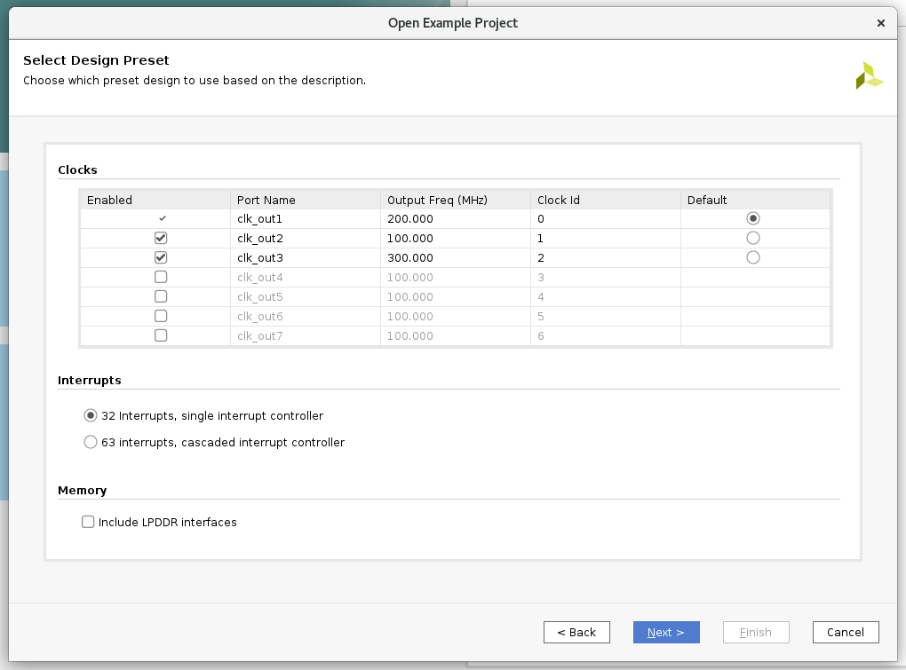

Versal Custom Platform Creation Tutorial |
Step 0: Create a Base Bootable Design for VCK190¶
The purpose of step 0 is to provide a good baseline for platform creation.
There are various ways to create a starting point for Versal design. In this tutorial, we’ll configure the CIPS and NOC block with Vivado Customizable Example Design. Since the example design has been validated by Xilinx, We will skip testing the base bootable design. For custom board or custom designs, please create a normal Vivado project (not Vitis Platform Project) and validate the design with instructions in Custom Board Additional Steps
VCK190 ES1 Setup¶
Note: If you’re using production VCK190 board, please skip this step.
Show VCK190 ES1 Setup Steps
VCK190 ES1 Setup: Enable Versal ES Devices¶
Edit your <Vivado_Installation_Path>/scripts/Vivado_init.tcl and <Vivado_Installation_Path>/scripts/hls_init.tcl to add the following line:
enable_beta_device xcvc*
VCK190 ES1 Setup: Download VCK190 ES1 board file¶
Note: If you’re using production VCK190 board, please skip this step.
Launch Vivado
Run
source <Vitis_Install_Directory>/settings64.shto setup Vivado running environmentRun Vivado by typing
vivadoin the console.
Download VCK190 ES1 board file
Click Tools -> XHUB Store
Click OK to agree with the information.
Go to Board tab
Expand Evaluation Boards
Select Versal VCK190 ES1 Evaluation Platform
Click Install button
Click Close to close the window
Create Versal Extensible Embedded Platform Example Design¶
Launch Vivado if you haven’t
Run
source <Vitis_Install_Directory>/settings64.shto setup Vivado running environmentRun Vivado by typing
vivadoin the console.
Download Versal Extensible Embedded Platform Example
Click menu Tools -> Vivado Store..
Click OK to agree to download open source examples from web
Select Platform -> Versal Extensible Embedded Platform and click the download button on the tool bar
Click Close after installation complete.
Create the Versal Extensible Embedded Platform Example project
Click File -> Project -> Open Example
Select Versal Extensible Embedded Platform in Select Project Template window.
Input project name and project location. Keep Create project subdirectory checked. Click Next.
Select target board in Default Part window. In this example, we use Versal VCK190 Evaluation Platform or Versal VCK190 ES1 Evaluation Platform. Click Next.

Configure Clocks Settings. You can enable more clocks, update output frequency and define default clock in this view. In this example, we can keep the default settings.
Configure Interrupt Settings. You can choose how many interrupt should this platform support. 63 interrupts mode will use two AXI_INTC in cascade mode. In this example, we can keep the default setting.
Configure Memory Settings. By default the example design will only enable DDR4. If you enable LPDDR4, it will enable both DDR4 and LPDDR4. In this example, we can keep the default setting.
Click Next.
Review the new project summary and click Finish.
After a while, you will see the design example has been generated.
The generated design instantiated AI Engine, enabled DDR4 controller and connected them to CIPS. It also provides one interrupt controller, three clocks and the associated synchronous reset signals.

At this stage, the Vivado block automation has added a Control, Interface & Processing System (shorten with CIPS in the future) block, AXI NOC block, AI Engine, and all supporting logic blocks to the diagram, and applied all board presets for the VCK190. Since it’s a validated design, you can go to step1:Hardware Settings for Vitis Platform to review or update platform settings and skip the validation below.
For a custom board, platform developers need to configure CIPS and NOC for processor settings and DDR settings. Please complete the following testings before going to next step.
Custom Board Additional Steps¶
When designing platforms on custom boards, we need to verify the base bootable design on board before going forward. It can help to isolate the root cause if the following platform creation steps generates any errors - whether it’s bring by kernel, platform creation, or by the base design configuration.
Custom Board Considerations¶
When designing platform for a custom board, user needs to setup these parameters by themselves.
On Vivado project side, please
Create a design based on your silicon model rather than board type. You can start from scratch, or update device after creating a design fromm Versal Extensible Platform Example.
Make sure clock input parameters match hardware setup.
Configure PS Peripherals: UART, SD Card, QSPI, etc.
Write pinout location in XDC file, including clock, reset, DDR, etc.
For PetaLinux design, please
Use default MACHINE_NAME
Update device tree in system_user.dtsi for your custom peripherals on the board, like Ethernet, EEPROM, etc.
(Optional) Go through Implementation and Device Image Generation¶
If the custom platform is created from scratch, it’s recommended to run through implementation and device image generation to find errors in early stage for the base bootable design. The platform doesn’t need the implementation results, the implementation is used for design validation only.
To run this step, please make sure the project is a normal project. This project is a Vitis Platform project should NOT be selected during Vivado project creation.
Show Detailed Steps
Validate the Block Design
Click Validate Design (F6) button in block diagram toolbar.
Create HDL Wrapper
In Sources tab, right click system.bd and select Create HDL Wrapper. In the pop-up window, select Let Vivado Manage.
Generate Device Image
Click Generate Device Image in Flow Navigator
Click Yes if it pops up a message to say No Implementation Results Available.

Click OK for default options for Launch Runs dialouge.
It takes a while to generate block diagram and run through implementation.
PDI is generated in
vck190_custom_platform.runs/impl_1/Export fixed XSA for PetaLinux project Creation
a) Click Menu File -> Export -> Hardware, click Next
b) Select Output to Include Device Image. Click Next.
c) Set output XSA file name and directory. Click Next.
d) Click Finish
(Optional) Validate PDI on Hardware¶
If the custom platform is created from scratch, it’s recommended to test the device image (PDI) on hardware to make sure the device initialization configuration is set correctly. This is not a step required for platform creation, but it can reduce issues you find in the last platform validation stage.
To run this step, please make sure This project is a Vitis Platform project is NOT selected during platform creation.
Show Detailed Steps
Connect hardware server in XSCT
# If JTAG cable is connected locally connect # If JTAG cable is connected on another server, launch hw_server on that server then connect to that remote hardware server connect -url TCP:<SERVER NAME or IP>:3121
Download PDI in XSCT
device program <PDI file>
PDI program should download without errors. If any error occurs in XSCT console, please check block design settings.
Here’s the sample prints on UART console of VCK190 board
Show Log
[8.716546]****************************************
[10.387178]Xilinx Versal Platform Loader and Manager
[15.181959]Release 2020.2 Nov 30 2020 - 07:20:11
[19.889662]Platform Version: v1.0 PMC: v1.0, PS: v1.0
[24.684093]BOOTMODE: 0, MULTIBOOT: 0x0
[28.172159]****************************************
[32.817343] 28.506881 ms for PrtnNum: 1, Size: 2224 Bytes
[37.939565]-------Loading Prtn No: 0x2
[41.975581] 0.531603 ms for PrtnNum: 2, Size: 48 Bytes
[46.307975]-------Loading Prtn No: 0x3
[153.848428] 104.031565 ms for PrtnNum: 3, Size: 57168 Bytes
[156.392071]-------Loading Prtn No: 0x4
[159.994956] 0.012506 ms for PrtnNum: 4, Size: 2512 Bytes
[165.110546]-------Loading Prtn No: 0x5
[168.715028] 0.014362 ms for PrtnNum: 5, Size: 3424 Bytes
[173.831756]-------Loading Prtn No: 0x6
[177.430206] 0.007693 ms for PrtnNum: 6, Size: 80 Bytes
[182.427400]+++++++Loading Image No: 0x2, Name: pl_cfi, Id: 0x18700000
[188.652918]-------Loading Prtn No: 0x7
[1564.072421] 1371.823162 ms for PrtnNum: 7, Size: 707472 Bytes
[1566.876806]-------Loading Prtn No: 0x8
[1956.351062] 385.792100 ms for PrtnNum: 8, Size: 365712 Bytes
[1959.102465]+++++++Loading Image No: 0x3, Name: fpd, Id: 0x0420C003
[1965.172668]-------Loading Prtn No: 0x9
[1969.287834] 0.436437 ms for PrtnNum: 9, Size: 992 Bytes
[1974.032078]***********Boot PDI Load: Done*************
[1979.057962]55080.597596 ms: ROM Time
[1982.528018]Total PLM Boot Time
If the PDI can’t load successfully, please check the CIPS configuration.
(Optional) Create PetaLinux Project¶
If the custom platform is created from scratch, it’s recommended to test building the PetaLinux image and run on hardware before turning this project into a platform project. This is not a step required for platform creation, but it can reduce issues you find in the step 2 - software preparation.
To run this step, please make sure This project is a Vitis Platform project is NOT selected during platform creation.
Show Detailed Steps
For a quick demonstration in this step, we’ll use VCK190 pre-built device tree. It helps to setup peripheral properties, such as Ethernet MAC phy address, etc. These settings are specific to each board. It needs BSP engineers to develop during board bring up phase for custom boards.
Create PetaLinux Project with XSA
petalinux-create -t project --template versal --force -n petalinux cd petalinux petalinux-config --get-hw-description=<path to xsa directory> --silentconfig
The created PetaLinux project name is petalinux. Please feel free to change the PetaLinux project name with petalinux-create -n option.
The XSA used for PetaLinux needs to be a post implementation XSA.
Apply VCK190 device tree
Run
petalinux-configGo to DTG Settings
Enter versal-vck190-reva-x-ebm-02-reva for MACHINE_NAME option (CONFIG_SUBSYSTEM_MACHINE_NAME)
Note: This preset device setting will add ethernet PHY info to device tree. The device tree source code will be applied to the PetaLinux project.
Build PetaLinux Image
petalinux-build petalinux-package --boot --u-boot
Output BOOT.BIN, boot.scr and image.ub are located in images/linux directory.
Validate PetaLinux image on Board
Copy BOOT.BIN, image.ub and boot.scr from build/petalinux/images/linux directory to SD card (fat32 partition).
Insert SD card to VCK190, set boot mode to SD boot (0001) and boot the board.
Make sure Linux boot successfully. Login with username: root, password: root
Fast Track¶
Scripts are provided to re-create projects and generate outputs in each step. To use these scripts, please run the following steps.
Run build
# cd to the step directory, e.g. cd step0_bootable_design make all
To clean the generated files, please run
make clean
This script downloads the VCK190 ES1 board support and the Versal Extensible Design example to local repository and creates the example design, generate block diagram and export XSA.
A top level all in one build script is also provided. To build everything (step 0 to step 4) with one command, please go to ref_files directory and run
make all
To clean all the generated files, please run
make clean
Change the Vivado design to Vitis Platform Design¶
From next step, we will begin to setup the platform properties. It needs the Vivado design to be a Vitis Platform design.
Go to Flow Navigator window
Click Settings in Project Manager
Go to Project Settings -> General, enable Project is an extensible Vitis platform
Next Step¶
Now we have a base bootable design. Next we’ll go to step 1 to update the Vivado design for hardware platform requirements.
References¶
https://github.com/Xilinx/XilinxBoardStore/wiki/Accessing-the-Board-Store-Repository
Copyright© 2021 Xilinx